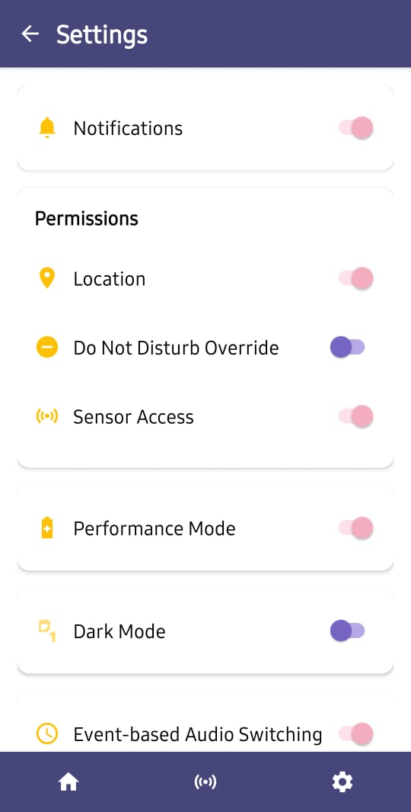
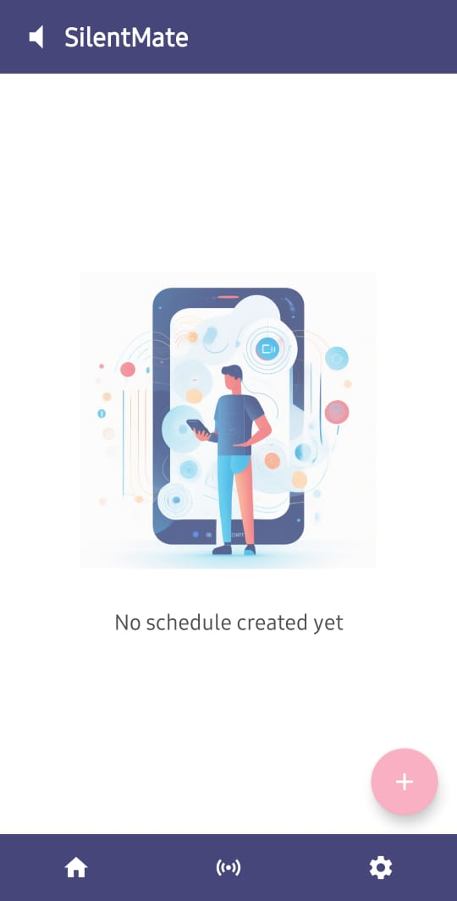

Welcome to Silent Mate
🎯 What is Silent Mate?
Silent Mate is an intelligent Android application that automatically manages your phone's audio profile using two powerful methods:
-
Sensor-Based Detection
Automatically detects your phone's position using hardware sensors and adjusts audio profiles accordingly.
→ No manual switching required!
-
Event-Based Scheduling
Schedule audio profiles for specific times and locations. Perfect for meetings, gym, sleep time, and more.
→ Set it and forget it!
✨ Key Features
📡 Sensor-Based Detection
Automatic position detection using your phone's built-in sensors:
📱 On Desk Detection
When: Phone lying face-up, stable
Profile: Silent Mode 🔇
Sensors: Accelerometer + Gyroscope
Perfect for: Meetings, work, sleep
👖 In Pocket Detection
When: Phone face-down + proximity sensor triggered
Profile: Vibration Mode 📳
Sensors: Proximity + Accelerometer
Perfect for: Walking, commuting, shopping
🤚 In Hand Detection
When: Phone face-up with movement
Profile: General Mode 🔊
Sensors: Accelerometer + Gyroscope
Perfect for: Browsing, texting, active use
⏰ Event-Based Scheduling
Create smart schedules for your audio profiles:
| Feature | Description | Use Case |
|---|---|---|
| 📅 Time-Based | Set start and end times | Daily meetings at 9 AM |
| 📍 Location-Based | Trigger at specific places | Silent at office, vibrate at gym |
| 🔄 Recurring Events | Daily, Weekly, Monthly | Sleep schedule, weekly classes |
| 🎯 Custom Profiles | Choose any audio mode | Silent, Vibration, or General |
Example Events:
🎨 Audio Profiles
Silent Mate manages three audio profiles:
-
Silent Mode
Sound: ❌ Off
Vibration: ❌ Off
Best for: Meetings, theaters, sleep, focus time
Alarms still ring at full volume
-
Vibration Mode
Sound: ❌ Off
Vibration: ✅ On
Best for: Pocket, bag, public places, discrete notifications
Strong vibration patterns for alerts
-
General Mode
Sound: ✅ On
Vibration: ✅ On
Best for: Active use, music, videos, calls
Full sound and vibration enabled
🚀 Quick Start
Get Silent Mate running in 5 minutes:
Download & Install
- Download APK from GitHub Releases
- Enable "Install from Unknown Sources" if prompted
- Open APK and tap "Install"
- Launch Silent Mate
Requirements:
- Android 5.0 (Lollipop) or higher
- ~10 MB storage
- ~50 MB RAM during use
Grant Essential Permissions

Required:
- ✅ Do Not Disturb Access - Change audio profiles
- ✅ Sensor Access - Position detection (auto-granted)
Optional:
- ⭕ Location - Location-based events
- ⭕ Notifications - Status alerts
Choose Your Mode

Option A: Sensor-Based
- Go to Sensor screen (center tab)
- Toggle ON desired detection modes
- Test by moving your phone
Option B: Event-Based
- Tap "+ Add Event" on Home screen
- Fill in event details
- Save and enable
Option C: Both!
Use sensors for automatic switching and events for scheduled overrides.
You're All Set! 🎉
Silent Mate is now managing your audio profiles automatically.
What happens next:
- Phone on desk → Silent 🔇
- Phone in pocket → Vibration 📳
- Phone in hand → General 🔊
- Scheduled events → Override sensors
Need help? Check the Troubleshooting Guide
📊 How It Works
Sensor-Based Flow
graph TD
A[📱 Phone Sensors] --> B{Check Position}
B -->|Face-up + Stable| C[🔇 Silent Mode]
B -->|Face-down + Near| D[📳 Vibration Mode]
B -->|Face-up + Movement| E[🔊 General Mode]
C --> F[Apply Profile]
D --> F
E --> F
F --> G[Send Notification]
G --> A
style C fill:#f9c74f
style D fill:#90be6d
style E fill:#f94144Event-Based Flow
graph TD
A[⏰ Event Scheduler] --> B{Event Time?}
B -->|Not Yet| C[⏳ Wait]
B -->|Now!| D{Location Check}
D -->|Match or N/A| E[Apply Event Profile]
D -->|Wrong Location| C
E --> F[Pause Sensor Detection]
F --> G{Event Ended?}
G -->|No| F
G -->|Yes| H[Resume Sensor Detection]
style E fill:#4cc9f0
style F fill:#b5838d
style H fill:#90be6dPriority System
graph LR
A[User Input] --> B{Active Event?}
B -->|Yes| C[🥇 Event Priority]
B -->|No| D{Sensors Enabled?}
D -->|Yes| E[🥈 Sensor Detection]
D -->|No| F[🥉 Manual Mode]
C --> G[Apply Profile]
E --> G
F --> G
style C fill:#f94144
style E fill:#90be6d
style F fill:#4cc9f0🎯 Use Cases
Office Worker
Challenge: Constant audio profile switching during work
Solution:
- Create "Work Hours" event (9 AM - 5 PM, Silent)
- Enable "In Hand" detection for breaks
- Location-based trigger at office
Result: Silent during meetings, sound when picked up
Student
Challenge: Need silence during classes, sound after
Solution:
- Schedule classes (Silent mode)
- Enable sensor detection between classes
- "In Pocket" mode in hallways (Vibration)
Result: Automatic switching between classes and breaks
Fitness Enthusiast
Challenge: Want music at gym, silence elsewhere
Solution:
- Create "Gym Time" event (General mode)
- Location trigger at gym
- Sensor detection at home/office
Result: Music at gym, auto-switching elsewhere
Night Owl
Challenge: Disturbed by notifications during sleep
Solution:
- Create "Sleep Schedule" (11 PM - 7 AM, Silent)
- Daily recurrence
- No location (works anywhere)
Result: Uninterrupted sleep, auto-resume in morning
💡 Why Choose Silent Mate?
Compared to Manual Switching
| Feature | Manual | Silent Mate |
|---|---|---|
| Convenience | Must remember to switch | ✅ Automatic |
| Accuracy | Often forget | ✅ Always correct |
| Context-aware | No | ✅ Position + Time |
| Battery Impact | None | ✅ Minimal (2-10%) |
| Customization | Limited | ✅ Fully configurable |
Compared to Other Apps
| Feature | Silent Mate | Tasker | Do Not Disturb |
|---|---|---|---|
| Sensor Detection | ✅ Built-in | ⚠️ Complex setup | ❌ None |
| Event Scheduling | ✅ Easy UI | ✅ Advanced | ⚠️ Basic |
| Location-Based | ✅ Optional | ✅ Yes | ❌ None |
| Ease of Use | ✅ Simple | ❌ Steep learning curve | ✅ Simple |
| Price | ✅ Free | 💰 Paid | ✅ Free |
| Privacy | ✅ No data collection | ⚠️ Varies | ✅ System app |
| Battery | ✅ Optimized | ⚠️ Varies | ✅ Minimal |
🛡️ Privacy & Security
Privacy First
Silent Mate respects your privacy:
- ✅ No Internet Required - Works completely offline
- ✅ No Data Collection - Zero tracking or analytics
- ✅ No Ads - Clean, ad-free experience
- ✅ On-Device Processing - Everything stays on your phone
- ✅ Open Source - Code is transparent and reviewable
- ✅ Minimal Permissions - Only what's necessary
Permissions Explained:
| Permission | Purpose | Required? |
|---|---|---|
| Do Not Disturb | Change audio profiles | ✅ Yes |
| Sensors | Position detection | ✅ Yes (auto-granted) |
| Location | Location-based events | ⭕ Optional |
| Notifications | Status updates | ⭕ Optional |
📈 Performance
Battery Usage
| Mode | Battery/Day | Detection Speed | Recommended For |
|---|---|---|---|
| Power Saver | 2-5% | 500-2000ms | Daily use |
| High Performance | 5-10% | 200-1000ms | Active testing |
| Events Only | <1% | Instant | Scheduled profiles only |
Accuracy Metrics
| Detection Type | Accuracy | False Positives |
|---|---|---|
| On Desk | ~95% | <2% |
| In Pocket | ~90% | <5% |
| In Hand | ~95% | <3% |
📚 Documentation
-
Getting Started
Complete setup guide with step-by-step instructions
-
Features
Detailed overview of all sensor and event-based features
-
Troubleshooting
Solutions to common problems and device-specific issues
-
FAQ
Answers to frequently asked questions
-
Developer Docs
Architecture, APIs, and contribution guidelines
-
Technical Docs
Deep dive into sensor logic and audio management
🤝 Community & Support
Get Help
- 📖 Documentation - You're reading it!
- 🐛 Bug Reports - GitHub Issues
- 💬 Discussions - GitHub Discussions
- ✉️ Email - support@example.com
Contribute
We welcome contributions!
- 🐛 Report bugs
- 💡 Suggest features
- 📝 Improve documentation
- 💻 Submit pull requests
- ⭐ Star the repository
Stay Updated
- 📢 Releases - GitHub Releases
- 📋 Changelog - Version History
- 🎯 Roadmap - Planned Features
🎓 Learn More
New Users
Just installed Silent Mate?
- Read the Getting Started Guide
- Create your first scheduled event
- Test sensor detection
- Explore advanced features
Power Users
Want to maximize Silent Mate?
- Combine sensor and event modes
- Create location-based profiles
- Fine-tune detection settings
- Set up recurring schedules
Developers
Want to contribute?
- Review the architecture
- Understand sensor logic
- Set up dev environment
- Read contribution guidelines
📜 License
Silent Mate is licensed under the MIT License.
TL;DR: You can use, modify, and distribute Silent Mate freely, even for commercial purposes.
🌟 Show Your Support
If you find Silent Mate helpful:
- ⭐ Star on GitHub
- 🐛 Report bugs
- 💡 Suggest features
- 📢 Share with friends
- 📝 Write a review